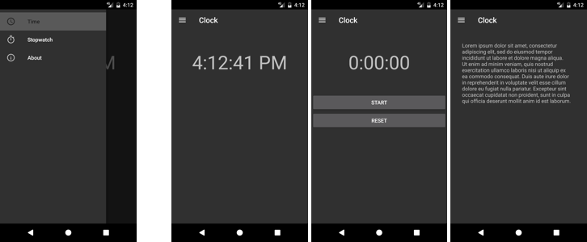

Duration
15 minutes
Lab goals
The goal of this exercise is to add Drawer Navigation to a partially-written app. You will be working on a Clock app with three pages: current time, stopwatch, and about. The individual pages and the Main Activity with a Toolbar are supplied. The navigation UI is also provided since it requires a large amount of boilerplate XML. Your job is to write the code that opens/closes the drawer and a handler for menu-item selection.
The image below shows the finished app at the end of this exercise. The first screenshot shows the open navigation drawer containing the navigation menu. The other three screenshots show the result of navigating to each of the three fragments.
Required assets
The provided Exercise 5/Start folder contains the starter code for the app. There is also a Exercise 5/Completed folder with a solution you can use to check your work. Please make sure you have these folders before you begin.
Steps
Below are the step-by-step instructions to implement the exercise.
Examine the starter code
The supplied code implements most of the Clock app. You are likely already familiar with the core app from previous exercises, so this section gives a quick tour of the new parts.
- Open the Clock solution from the Start folder.
- Open Properties > AndroidManifest.xml. Notice that we set Theme.AppCompat.NoActionBar as the app theme. This is required because we are using a support Toolbar as our app bar.
- Open Resources > layout > Main.axml in source-code view.
-
We use a
DrawerLayoutas the root layout. It has anidso you can access it from code. -
After that is a
LinearLayoutwith aToolbarand aFrameLayout. TheToolbarhosts the "hamburger" menu button and theFrameLayoutdisplays the content fragment (time, stopwatch, or about). Both have ids so you can access them from code. -
After that is a
NavigationViewthat implements the sliding-drawer menu. Its gravity is set tostartso it will slide out from the left side. It has an id so it can be accessed from code. Finally, and most importantly, itsmenuproperty is set to the name of the XML file containing the menu definition. - Open Resources > menu > navigation_menu.xml.
-
The menu has three
itemelements, one for each of the three fragments (time, stopwatch, about). Each item has an id so you can identify it from code - you'll be writing an event handler to respond when the user selects one of these menu entries. - Open MainActivity.cs.
-
Notice that the
MainActivityclass inherits fromAppCompatActivity. This is required because we are using a support Toolbar as the Activity's app bar. -
Examine the
OnCreatemethod. Notice that the code to install the Toolbar as the app bar is already in place. The Android menu icon (aka "hamburger") is set as the icon for the Toolbar's navigation button. -
Finally, notice the provided
Navigatehelper method that updates the visible fragment in the UI.
Respond to Toolbar navigation click
Here you will open the navigation drawer when the user taps on the Toolbar's navigation icon.
- Open MainActivity.cs. All your work will be done in this file.
-
Override the Activity's
OnOptionsItemSelectedmethod. Test the value ofitem.ItemIdto see if it is equal toAndroid.Resource.Id.Home. The code is provided below if you would like it. -
Inside your case for
Android.Resource.Id.Homeyou'll need to open the drawer. There are two steps to do this. First, useFindViewByIdto retrieve a reference to theDrawerLayout. Second, call theOpenDrawermethod and pass the gravity value to identify the drawer (for us this will beAndroid.Support.V4.View.GravityCompat.Start). - Run the app to test your work. Use the button to open the navigation drawer. Use swipe gestures to open/close the navigation drawer. Notice that selecting a menu entry does not close the drawer - you'll be coding that next.
Respond to menu selection
Here you will replace the visible fragment when the user selects a menu entry.
-
In
OnCreate, useFindViewByIdto retrieve a reference to theNavigationView.var menu = FindViewById<Android.Support.Design.Widget.NavigationView>(Resource.Id.navigationView);
-
Subscribe to the
NavigationView'sNavigationItemSelectedevent. -
In your
NavigationItemSelectedhandler,switchone.MenuItem.ItemId. Add onecasefor each menu item (the three ids you need to look for aretimeMenuItem,stopwatchMenuItem, andaboutMenuItem). In each case, call theNavigatehelper method and pass it an appropriate fragment. The code is provided below if you would like it. -
Still in your
NavigationItemSelectedhandler, set the state of thee.MenuItemto checked - you do not need to uncheck the previous selection since thecheckableBehaviorof the menu group is set tosingle.e.MenuItem.SetChecked(true);
-
The last piece of your
NavigationItemSelectedhandler is to close the drawer. The steps are almost identical to when you opened the drawer. First, useFindViewByIdto retrieve a reference to theDrawerLayout. Second, call theCloseDrawermethod and pass the gravity value to identify the drawer (for us this will beAndroid.Support.V4.View.GravityCompat.Start). - Run the app to test your work.
Summary
In this exercise, you used Drawer Navigation to implement a flyout menu. This pattern can be complex to code since it has several components that all need to interact with each other. However, it can be worth the effort when you have an app with many pages: Drawer Navigation gives you the room for a large menu with links to all your pages while taking up minimal UI real estate when the menu is closed.
In your opinion, was Drawer Navigation appropriate for this app? Would it have been better to use Tabs? There is no right or wrong answer here, it is just something to think about.